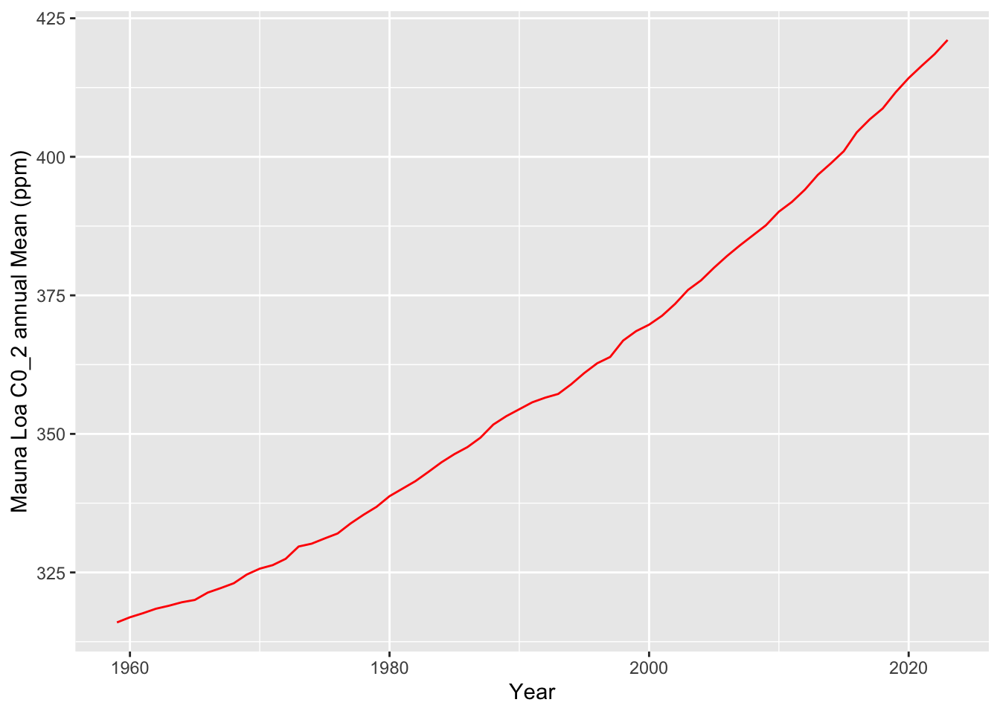

library(readr)
library(dplyr)
Attaching package: 'dplyr'The following objects are masked from 'package:stats':
filter, lagThe following objects are masked from 'package:base':
intersect, setdiff, setequal, unionlibrary(ggplot2)Warning: package 'ggplot2' was built under R version 4.3.2library(kableExtra)Warning: package 'kableExtra' was built under R version 4.3.2
Attaching package: 'kableExtra'The following object is masked from 'package:dplyr':
group_rowslibrary(webshot2)
url <- ("ftp://aftp.cmdl.noaa.gov/products/trends/co2/co2_annmean_mlo.txt")
co2mean <- read_table(url, skip = 45, col_names = c("Year", "co2_mean"))
── Column specification ────────────────────────────────────────────────────────
cols(
Year = col_double(),
co2_mean = col_double()
)Warning: 65 parsing failures.
row col expected actual file
1 -- 2 columns 3 columns 'ftp://aftp.cmdl.noaa.gov/products/trends/co2/co2_annmean_mlo.txt'
2 -- 2 columns 3 columns 'ftp://aftp.cmdl.noaa.gov/products/trends/co2/co2_annmean_mlo.txt'
3 -- 2 columns 3 columns 'ftp://aftp.cmdl.noaa.gov/products/trends/co2/co2_annmean_mlo.txt'
4 -- 2 columns 3 columns 'ftp://aftp.cmdl.noaa.gov/products/trends/co2/co2_annmean_mlo.txt'
5 -- 2 columns 3 columns 'ftp://aftp.cmdl.noaa.gov/products/trends/co2/co2_annmean_mlo.txt'
... ... ......... ......... ..................................................................
See problems(...) for more details.ggplot(co2mean, aes(Year, co2_mean)) +
geom_line(color = "red") +
labs( x = "Year", y = "Mauna Loa C0_2 annual Mean (ppm)")